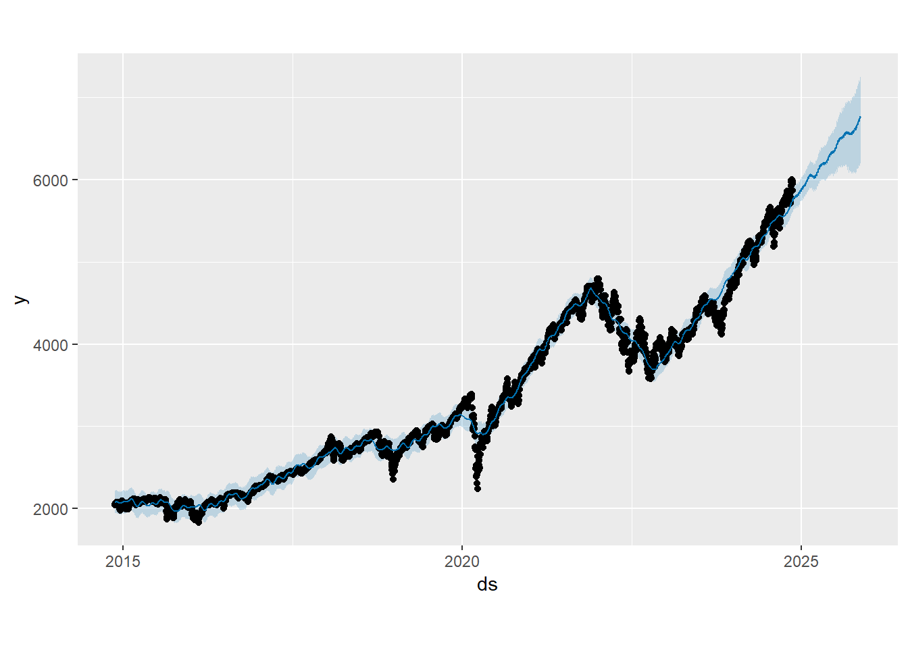
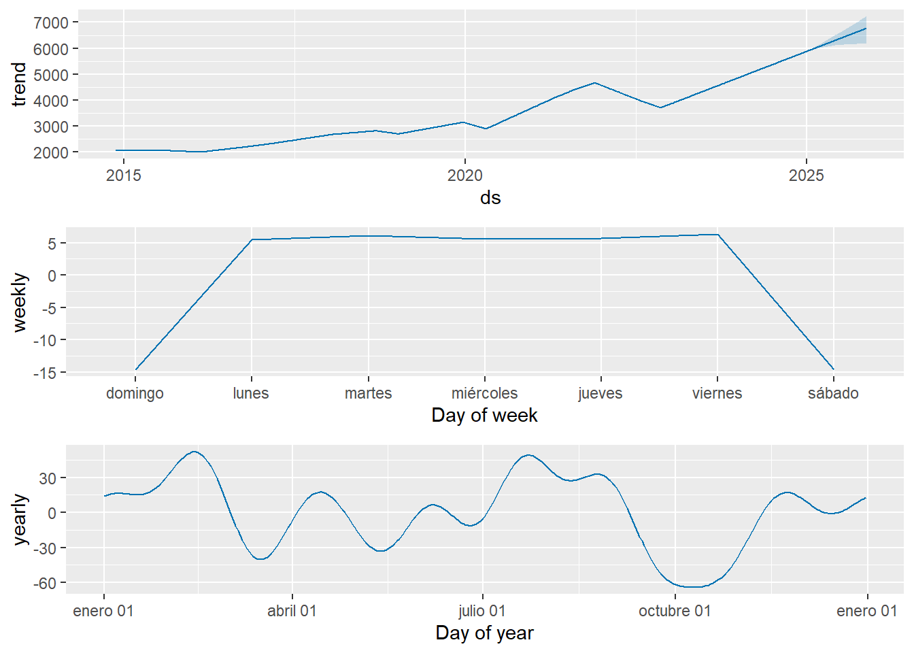

6 Análisis de Series de Tiempo con Facebook Prophet.
6.1 Introducción.
En este capítulo se aplica el modelo Facebook Prophet para analizar una serie de tiempo basada en datos históricos del índice S&P 500. El objetivo principal es explorar tendencias, estacionalidades y realizar predicciones futuras, complementando los modelos trabajados previamente. Además, se justifica la viabilidad de tratar la serie como una regresión, conectando los hallazgos con enfoques lineales y estacionarios ya planteados.
6.2 Preparación de los Datos.
Para llevar a cabo el análisis con Prophet, fue necesario preparar previamente el dataset spx_data, que contiene información histórica del índice S&P 500, incluyendo la fecha (Date), el precio de cierre (Close/Last), apertura (Open), máximos (High) y mínimos (Low). Prophet requiere que las columnas de fecha y la variable objetivo tengan nombres específicos para procesar los datos correctamente.
Primero, la columna Date se renombró como ds (date stamp) y la columna Close/Last se renombró como y (valor a predecir). Además, los datos fueron ordenados cronológicamente en orden ascendente para garantizar la consistencia temporal del modelo. Este preprocesamiento fue esencial para alinear el formato del dataset con los requisitos de Prophet, asegurando que las fechas fueran interpretadas correctamente y los valores de cierre sirvieran como base para las predicciones.
# Prepare the dataset for Prophet
spx_data_prepared <- spx_data %>%
rename(ds = Date, y = `Close/Last`) %>%
arrange(ds)
# Check the prepared dataset
head(spx_data_prepared)## # A tibble: 6 × 5
## ds y Open High Low
## <date> <dbl> <dbl> <dbl> <dbl>
## 1 2014-11-17 2041. 2038. 2043. 2034.
## 2 2014-11-18 2052. 2041. 2056. 2041.
## 3 2014-11-19 2049. 2051. 2052. 2040.
## 4 2014-11-20 2053. 2046. 2054. 2040.
## 5 2014-11-21 2064. 2057. 2071. 2057.
## 6 2014-11-24 2069. 2065. 2070. 2065.6.3 Aplicación del Modelo Prophet.
Con los datos preparados, se aplicó el modelo Prophet para analizar la serie temporal del índice S&P 500. Utilizando las columnas ds (fechas) y y (precio de cierre), el modelo fue ajustado para capturar las tendencias y estacionalidades presentes en los datos históricos.
# Load Prophet library
library(prophet)
# Fit the Prophet model
model <- prophet(spx_data_prepared)
# Create future dates for predictions
future <- make_future_dataframe(model, periods = 365)
# Generate predictions
forecast <- predict(model, future)6.3.1 Gráfico de Predicciones:

El gráfico combina los datos históricos del índice S&P 500 con las predicciones generadas por el modelo Prophet. La línea negra representa los valores reales observados desde 2015, mostrando un crecimiento sostenido con fluctuaciones atribuibles a eventos del mercado. La línea azul, que corresponde al pronóstico del modelo, sugiere que el índice mantendrá una tendencia ascendente en el futuro. El área sombreada en azul claro, que representa los intervalos de confianza, es estrecha en el corto plazo, indicando alta precisión en las predicciones inmediatas, y se amplía en el largo plazo, reflejando una mayor incertidumbre debido a factores impredecibles.
6.3.2 Gráfico de Componentes:

El gráfico descompone el comportamiento del índice S&P 500 en tres componentes principales: tendencia, estacionalidad semanal y estacionalidad anual. La tendencia refleja un crecimiento positivo sostenido a largo plazo, alineado con el desempeño histórico del mercado. La estacionalidad semanal muestra variaciones asociadas a los días de la semana, destacando una disminución los fines de semana debido a la inactividad del mercado. Por su parte, la estacionalidad anual identifica patrones cíclicos recurrentes a lo largo del año, posiblemente influenciados por ciclos económicos y eventos estacionales. Estos componentes permiten comprender los factores que afectan el comportamiento del índice y aportan información clave para las predicciones.
6.4 Justificación.
El análisis realizado con Prophet demuestra que la serie de tiempo del índice S&P 500 puede modelarse bajo un enfoque de regresión. Esto se debe a que el modelo descompone la serie en componentes fundamentales, como tendencia, estacionalidad semanal y anual, permitiendo capturar las relaciones temporales inherentes en los datos.
En este caso, el tiempo actúa como la variable independiente, mientras que el valor de cierre (Close/Last) es la variable dependiente. Prophet utiliza un enfoque aditivo, lo que significa que combina las tendencias y patrones estacionales en una fórmula de regresión temporal. Este método permite no solo predecir valores futuros, sino también identificar cómo las fluctuaciones diarias, semanales y anuales influyen en el comportamiento del índice. Por lo tanto, la serie puede justificarse como un problema de regresión, donde cada componente aporta información crucial para el modelo.
Un ejemplo práctico de esta relación se observa en la tendencia a largo plazo, que refleja el crecimiento sostenido del índice a lo largo de los años, mientras que las estacionalidades semanal y anual introducen variaciones más pequeñas pero consistentes, como los cambios en días de operación o ciclos económicos.
6.5 Conclusiones.
El modelo Prophet demostró ser una herramienta eficaz para analizar y predecir el comportamiento del índice S&P 500. La descomposición de la serie en componentes de tendencia, estacionalidad semanal y estacionalidad anual permitió no solo realizar predicciones precisas, sino también interpretar los patrones subyacentes en los datos históricos.
El enfoque de regresión aplicado en Prophet proporciona una base sólida para justificar el uso de esta técnica en el análisis de series temporales, al tratar el tiempo como predictor y los valores históricos como resultados. Esto refuerza la idea de que los datos financieros, como el índice S&P 500, pueden modelarse y explicarse utilizando metodologías de regresión dentro de un contexto temporal.